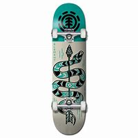

Las partes de los skates

La tabla
Tabla (Desk)
Normalmente formadas por siete láminas de madera de arce canadiense con forma cóncava, donde el extremo superior es el Nose y el inferior es Tail. Podemos encontrar ciertas tablas de alta gama con alguna lámina de fibra de carbono, pero no es lo más usual. Normalmente para diferenciar una parte de otra, al ser muy parecidas, se usa un tornillo de un color diferente de los otros en el Nose.
Respecto a la anchura las medidas van desde 7,5 a 8, 25 pulgadas (19-21 cm). La más común corresponde a 7,75 pulgadas que es la más aconsejable para los que se inician en este deporte, ya que es bastante estable y permite iniciarte en los primeros trucos. Una vez que llevemos tiempo practicando Skateboard iremos definiendo nuestro estilo y aquí la decisión del ancho de nuestra tabla: si nos decantamos por el estilo street de trucos cómo los flips escogeremos una tabla de menos de 8 pulgadas, ya que son más ligeras y permiten mayor libertad a la hora de realizar los movimientos, sin embargo perderemos superficie para planchar el truco. En cambio, si queremos mayor estabilidad para skateparks con rampas (half-pipes) al tener mayor superficie usaremos tablas de mas de 8 pulgadas, pero como es obvio perderemos capacidad para hacer más movimientos.
De todas maneras, tenemos que tener en cuenta dos factores fundamentales para la anchura: nuestra talla de pie y la altura. No tendrá ningún sentido comprarnos una tabla fijándonos en las medidas estándar y que finalmente por tener una talla grande de pie se nos acabe haciendo incómoda. Por lo que se recomienda SIEMPRE que probéis diferentes tablas que usen personas de la zona donde patinéis para decidir qué tabla y qué ancho es el adecuado para vosotros.
La longitud de las tablas para Skateboard es menor a 33 pulgadas (84 cm), aunque la mayoría y lo más común son las que están entre 30 y 31 pulgadas.
Por último, solo añadir sobre la forma cóncava de la tabla depende de cada marca y modelo, pero deberemos tener en cuenta que cuanto más cóncava mayor adherencia obtendremos para los trucos y cuanto menor sea tendremos menos roce con la lija. Aún así, vuelve a ser un tema de elección personal, probad distintos tipos de tablas y ver cuál se amolda más a vosotros, ya que mucha gente acaba haciéndose fiel a una marca por la forma de sus tablas, cada uno tiene sus gustos.
·Las partes del skate
·La lija
·Los rodamientos
·Las ruedas
·Los ejes